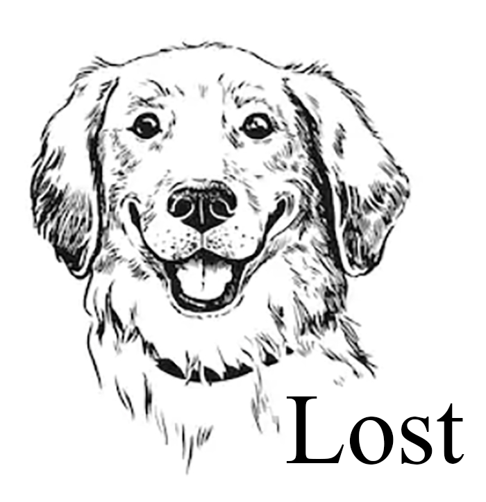

External Websites
Click on the picture to be redirected to another website on github.

Halloween Adventure is a "choose your own route" website where the viewer selects which path they wish to pursue. This website was for an assignment in Art 75 and was the first website I ever created using links and gifs. The story follows Tigger as he learns what decisions he should or shouldn't make during the night of Halloween. Each path leads to a different conclusion that will either teach a valuable lesson or to be funny.
Christmas Adventure is a sequel to the Halloween Adventure. This website was my final for Art 75. The story begins with a puppy that goes out into the snowy, cold world looking for fun.
However, sometimes being too naughty and some poor decisions will only bring diaster to the poor pup. Similar to Halloween Adventure,
this website includes comedy endings along with conclusions that emphaize the Christmas spirit while also bringing out the viewer's naughtiness.
Lost is a picture story where the audience as the character roams the empty land, lost with no one to be found.
An assignment for Art 74, this website emphasizes on not losing sight between what you want and what you already have.

